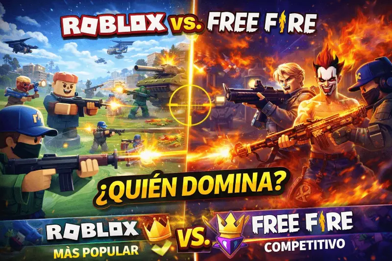

Shooters en Roblox vs. Free Fire en 2026: ¿cuál es el rey del competitivo móvil?

En 2026, el competitivo móvil hispanohablante tiene dos polos: Free Fire, el Battle Royale que domina el mercado latinoamericano con más de 80 millones de usuarios activos mensuales en la región, y los shooters de Roblox encabezados por Arsenal y Frontlines. Esta comparativa analiza ambos ecosistemas sin favoritismos y con datos concretos para ayudarte a decidir dónde invertir tu tiempo.
Dos caminos hacia el mismo jugador
Free Fire fue diseñado desde el primer día como un Battle Royale optimizado para móviles de gama media, con requisitos mínimos bajos para maximizar su alcance en mercados con menor poder adquisitivo. Es una propuesta de un solo juego, construida por un equipo profesional con presupuesto de gran estudio.
Los shooters de Roblox llegaron al mismo público por un camino completamente diferente. Arsenal —un shooter por rondas similar a CS:GO pero accesible— lleva años siendo uno de los juegos más jugados de Roblox con picos superiores al millón de jugadores simultáneos. Frontlines, el shooter táctico por equipos, es el título más reciente que ha desafiado el dominio de Arsenal con mecánicas más modernas. En 2026, estos dos títulos son los representantes más serios del género dentro de la plataforma.
Gráficos y rendimiento en dispositivos básicos
Rendimiento en gama baja
Los shooters de Roblox corren en dispositivos con solo 2 GB de RAM a 60 FPS estables. El motor de la plataforma está altamente optimizado para hardware modesto. Free Fire requiere al menos 3 GB para una experiencia estable. Para el mercado latinoamericano, donde una fracción significativa de los jugadores usa teléfonos de gama media-baja, este punto no es menor: el acceso sin fricción de los shooters de Roblox es una ventaja real y medible.
Fidelidad visual
Free Fire tiene un motor gráfico dedicado que produce resultados visuales claramente superiores a cualquier juego dentro de Roblox. Las animaciones de personajes, los efectos de explosión y las sombras en configuración media son notablemente más elaborados. Los shooters de Roblox heredan el motor de la plataforma, que ha mejorado mucho pero sigue siendo visualmente más abstracto que los shooters dedicados.
Sistema de apuntado: la diferencia que más importa en el competitivo
Sin asistencia: habilidad pura
Los shooters de Roblox usan un sistema de apuntado directo sin asistencia automática (o con asistencia mínima). El resultado de los duelos depende casi exclusivamente de la puntería del jugador. La curva de aprendizaje es más alta pero el ceiling de habilidad también lo es. Para jugadores que vienen de shooters de PC como CS2 o Valorant, la experiencia es notablemente más natural.
Asistencia configurable: accesibilidad máxima
Free Fire tiene un sistema de asistencia de apuntado robusto y altamente configurable. Reduce la barrera de entrada y permite a jugadores nuevos obtener eliminaciones desde el primer día. La penalización es que en el tope del ranking, la diferencia entre jugadores viene de la gestión de cobertura y las habilidades de personaje, no tanto de la puntería pura. Para nuevos jugadores en el género, es significativamente más satisfactorio desde el inicio.
Pay-to-win vs. solo cosméticos
Este es el punto donde la diferencia entre ambas propuestas es más clara y más importante para la decisión de dónde invertir tiempo:
- Arsenal y Frontlines (Roblox): venden exclusivamente cosméticos. Ningún ítem adquirido con Robux otorga ventajas estadísticas en el combate. La política de Roblox Corporation prohíbe mecánicas de pay-to-win en su plataforma. Un jugador sin dinero tiene exactamente las mismas armas que uno que ha gastado 100 USD.
- Free Fire: tiene un sistema de armas evolutivas que sí otorga ventajas estadísticas reales del 5–12% en estadísticas clave como retroceso y precisión. En el jugador casual estas diferencias se diluyen. En el ranking alto, la desigualdad es perceptible y los jugadores con armas evolutivas de nivel 6 tienen una ventaja objetiva en los duelos más ajustados.
Comunidad y ecosistema competitivo organizado
Liga Latinoamérica y estructura profesional
Free Fire tiene la infraestructura competitiva más desarrollada del gaming móvil en Latinoamérica. La Free Fire Liga Latinoamérica (FFLA) tiene transmisiones en directo con millones de espectadores, equipos profesionales patrocinados y una estructura de clasificación que va desde torneos abiertos hasta las finales mundiales. Es el ecosistema esports más maduro disponible para un jugador de la región que aspire al nivel profesional.
Comunidad activa pero sin liga unificada
La comunidad competitiva de los shooters de Roblox existe y tiene torneos organizados por la plataforma y por comunidades independientes. Sin embargo, está más fragmentada que la de Free Fire: cada juego tiene su propia liga y sus propios streamers de referencia. La ausencia de una liga oficial unificada para Arsenal o Frontlines limita la visibilidad del ecosistema competitivo y las oportunidades de carrera profesional.
Conclusión: no hay un rey absoluto
Después de analizar ambos ecosistemas con datos concretos, la conclusión es que no existe un ganador universal porque sirven a perfiles de jugador distintos. Si lo que buscas es competir en igualdad de condiciones sin invertir dinero, con mecánicas que recompensan la habilidad pura, los shooters de Roblox son la mejor opción disponible en 2026. Si lo que buscas es un ecosistema competitivo con estructura profesional real y el Battle Royale técnicamente más pulido del mercado móvil latino, Free Fire no tiene rival. La buena noticia es que no tienes que elegir: son experiencias complementarias, no mutuamente excluyentes.